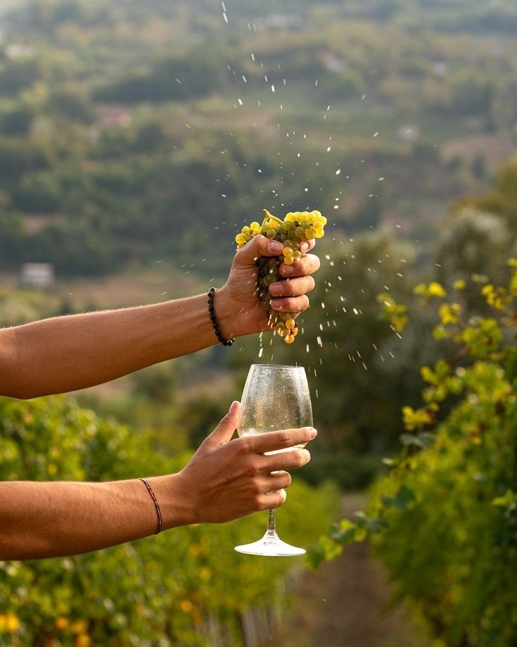

Havblink alkoholfri,
hvidvin uden kompromis
hvidvin uden kompromis
Dyrket med respekt for naturen, fremstillet med stolthed på Sydfyn.
Nyd vin med 0,0% alkohol og 100% god smag.
Prøve Vores Vin
Nyd vin med 0,0% alkohol og 100% god smag.
Alkoholfri nydelse - fem smage, en passion
Opdag dine favoritter blandt vores alkoholfri hvidvine. Klik på en
vin og læs mere om smag og servering.
Solaris - Druen der gør dansk vin mulig
Solaris er den grønne drue, der har revolutioneret dansk vinproduktion. Den trives i det kølige, nordiske klima og giver en frisk, frugtig og balanceret smag - perfekt til alkoholfri hvidvin.
Hos Havblink dyrker vi Solaris økologisk på sydfynske skråninger tæt ved havet. Resultatet er en vin, du kan nyde med god smag i munden – både smagsmæssigt og samvittighedsmæssigt.
Læse mere

Mere end vin – det er passion, håndværk og bæredygtighed
Hos Havblink skaber vi alkoholfri, økologisk hvidvin på sydfynske
marker – med respekt for naturen, kvalitet og smag.Vinen er
produceret i balance med klimaet, så du kan nyde et godt glas – uden
alkohol og uden kompromis.
læse mere
Bæredygtighed i hver dråbe
Dyrket i koldt klima
Nyt vinland, nye metoder
Lokalt og ærligt
Sydfyns sol, økologiske druer og vin skabt i balance med naturen.
Hos Havblink er bæredygtighed ikke en trend – det er en livsfilosofi.
læse mere
Hos Havblink er bæredygtighed ikke en trend – det er en livsfilosofi.
Du kan købe Havblinks alkoholfri vine hos: